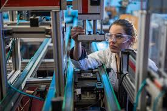

ADVANCED MANUFACTURING
It use of innovative technologies to make an existing products and new products. Through this technology, companies will prodc e new, better and more attractive products. Also, it can help the company to achieve their goals.